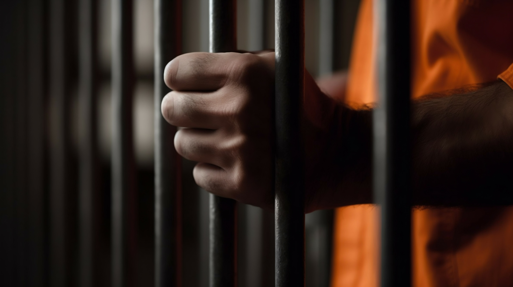
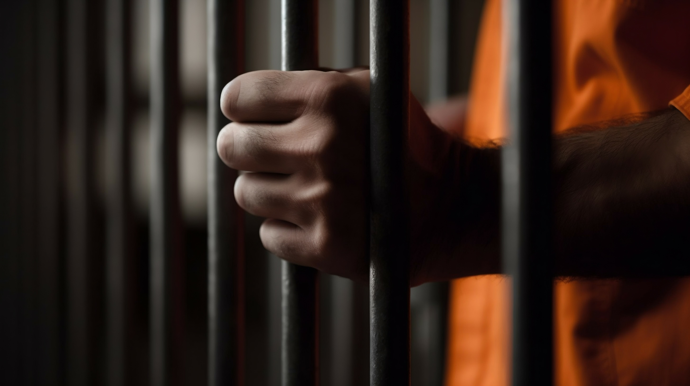

Racial Disparities in New York State's Prison System
Prisons in New York State are experiencing glaring inequalities, with data from the New York State Department of Corrections and Community Supervision indicating most incarcerated individuals are minorities.
Data gathered from 2008 to 2023 reveals the demographic breakdown of incarcerated individuals, which demonstrates a striking pattern. Among the male prison population in New York State, 50% are Black, 25% are Hispanic or Latino, while only 22% are white. The difference in racial distributions within the prisons highlights concerns regarding the criminal justice system.
Another trend emerges as 53% of those incarcerated in maximum-security prisons are Black, 25% are Hispanic or Latino, while only 19% are white. This data raises questions about potential systemic biases in law enforcement and in sentencing.
The data does suggest that disparities among prisoners are declining, as there are 50% fewer Black inmates in New York State in 2023 than in 2008. Although this number has significantly decreased, inequalities are still clear within the criminal justice system.
Challenges in Achieving Equity and Fairness in the Criminal Justice System
Dr. Todd Clear, a Rutgers University Professor of Criminal Justice, explained the most significant challenges facing the criminal justice system today in terms of equity and fairness.
“In today's landscape, ever-increasing sentence length and the likelihood of incarceration, given a conviction, are major factors,” said Clear.
Clear also described the elements that contribute to disparities in arrest rates, sentencing outcomes, and incarceration rates across different demographic groups.
“There is little consensus about this and much speculation. Different enforcement practices in impoverished neighborhoods have an effect on who gets arrested, and the weight given to prior records means that people who have faced more enforcement contact are treated more harshly in subsequent contacts,” explained Clear.
Though inequities within the criminal justice system extend far beyond the bustling streets of urban centers, they affect even the most remote rural communities.
“However, this is not just a factor of cities, because impoverished rural areas also have very high incarceration rates. Drug laws tend to bring poorer people into the criminal justice system, and once in the system, a person has difficulty getting out,” said Clear.
When considering approaches for reducing disparities and promoting fairness within the criminal justice system, Clear discussed his position.
“The only solution is twofold: put fewer people in prison and redirect the amount of time they spend there,” disclosed Clear.
Though there are inequalities within the criminal justice system, improvements have been made in recent years.
“Rates of incarceration for people of color are several times higher than rates for whites. The disparity is, however, declining, mostly as a consequence of changes in drug law enforcement,” expressed Clear.
In the field of criminal justice, there's a recognized need to address disparities in incarceration rates by reassessing sentencing practices and reducing prison populations. These actions are essential for ensuring fairness and equity within the system.
Comparing Criminal Justice System Data
In November 2022, new findings, highlighted by the New York Civil Liberties Union (NYCLU) and various legal analysts, further revealed deeply entrenched racial disparities in the system.
Simon McCormack, Senior Writer, and Jesse Barber, Research Analyst, for NYCLU investigated the stark differences between who gets convicted of felonies across New York as well as what that means for fair jury trials.
“In Manhattan — one of the wealthiest and least equal places in the country — courts convicted Black people of felonies and misdemeanors at a rate 21 times greater than that of white people over the past two decades. This disparity is the largest of any county in the state,” wrote McCormack.
The data from the New York State Department of Corrections and Community Supervision supported this report, as New York County, encompassing Manhattan, stands out with an exceptionally high number of almost 126,000 indictments. 45% of inmates in New York State prisoners were indicted in New York City. This notable statistic underscores the significant legal activity within this influential jurisdiction, pointing to potential trends or challenges that demand scrutiny.
“For decades, political and law enforcement leaders have flooded Black neighborhoods with police, while also arresting Black people more frequently, regardless of what neighborhood they’re in. Prosecutors then overcharge Black people compared to white people accused of the same crimes,” according to McCormack.
These disparities in treatment translate into alarming discrepancies in felony conviction rates. The ramifications of such convictions are profound, severely limiting individuals' opportunities to engage in society, secure employment, find housing, and pursue education. Moreover, these convictions perpetuate a vicious cycle of racially biased judgments.
“In the ten most populous counties in the state, where about 70 percent of New Yorkers reside, Black people were more than 13 times more likely to be convicted for felony drug offenses, and Latinx people were eight times more likely to be convicted for felony drug offenses,” wrote Barber.
The statistics on drug convictions and arrests vividly illustrate a discriminatory criminal justice system where individuals are targeted based on race rather than behavior.
Moving Forward
The data provided underscores the persistent racial disparities within New York State's criminal justice system. Despite some declines in the number of Black inmates over the years, inequalities remain stark. Dr. Todd Clear's insights shed light on the systemic factors contributing to these disparities, emphasizing the need for comprehensive reforms. Investigations by the New York Civil Liberties Union have brought attention to alarming trends, particularly in Manhattan, revealing the urgent need for scrutiny and action to address these injustices. As discussions continue to reassess sentencing practices and reduce prison populations, it's evident that significant work lies ahead to ensure fairness and equity within the criminal justice system.
Back to top